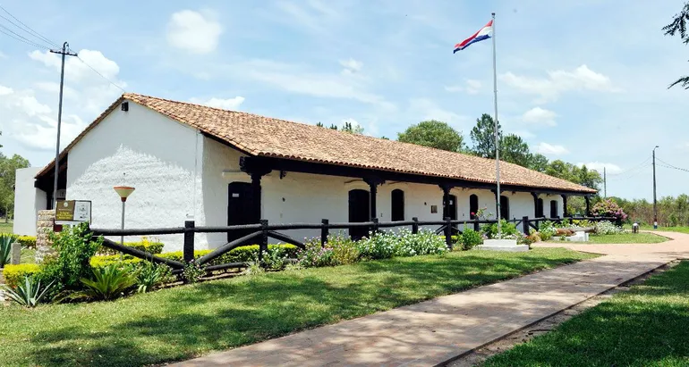
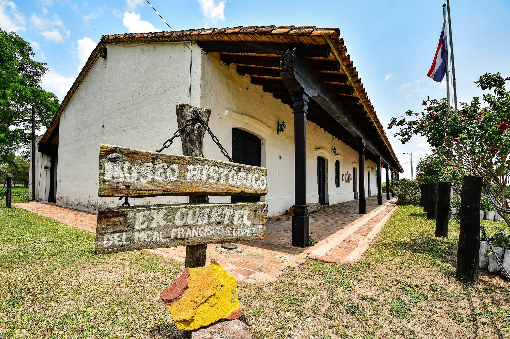
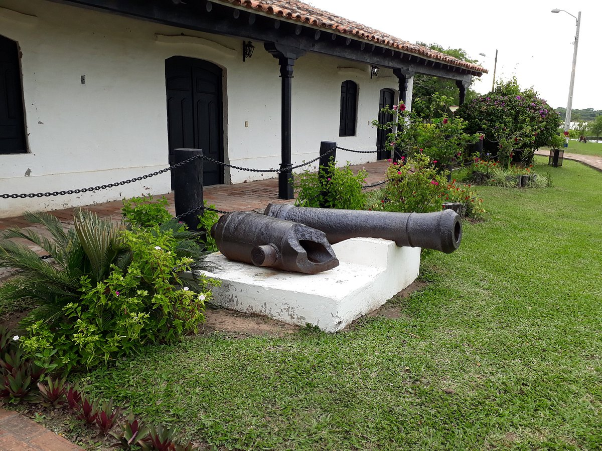
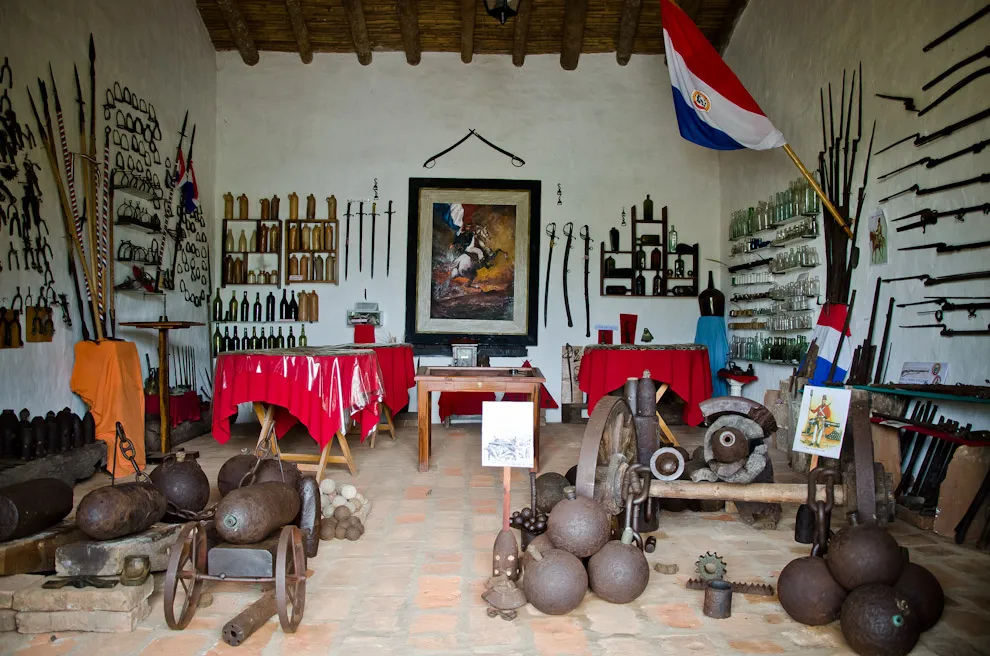

Prueba vivaz de la Guerra de la Triple Alianza, el Museo ex Cuartel del Mariscal López de Humaitá fue reacondicionado en el año 2011, que lo convierte en un atractivo turístico muy visitado. Guarda en su interior elementos que hablan del sacrificio y heroísmo de los soldados paraguayos en su lucha ante desigual fuerza. Y es ese aire de patriotismo lo que impacta al recorrer cada una de las salas.
En el edificio se encuentra la sala del monumento al coronel Juan Silvestre Mora, una de las piezas más emblemáticas del museo, además de una pieza única en todo el mundo: la Bandera Mártir de Humaitá, una bandera que llevaba impresa la leyenda "Libertad o Muerte" y que estuvo en el Teatro Principal de Humaitá, durante la ocupación brasileña.
En la actualidad, el museo cuenta con una sala dedicada a la Casa Presidencial, en la cual puede apreciarse un gran retrato de la Gata Prieta, una leyenda popular en la región. Otro de los atractivos del museo es la posibilidad de visitar el horno de fundición y los talleres de artesanía, en los que puede ser posible aprender de primera mano como se realiza la labor de la fundición del metal. Tambien la posibilidad de apreciar, de cerca, un tren y un carro de los que se usaban en la época colonial. En la sala del Cine Mutuo, puede apreciarse algunos de los materiales que se usaban en la proyección de películas, como cámaras y películas de nitrato. En la sala sobre la Guerra Grande, se puede contemplar muchas armas y cartas de oficiales, entre otros materiales que hacen posible una más completa comprensión de los hechos históricos. El edificio del museo es una recreación exacta del cuartel en la cual se realizó la rendición de los comandantes López y Caballero en el año 1870, lo que culminó con el fin de la Guerra Grande.
En cuanto a la atracción turística, la visita al museo se complementa con un recorrido por la isla del Lago Ypacaraí, uno de los lugares más hermosos de la región, así como por la Cascada del Gobernador Posse, un tesoro natural que se encuentra a unos pocos kilómetros del lago. La isla del Lago Ypacaraí es un lugar muy visitado por los turistas.
Algo que no puedes perderte es la gastronomía de la región, que es única en Paraguay y en el mundo. En Ñeembucú puedes probar platos como el mbeju, la sopa paraguaya y el chipa, que son la base de la alimentación cotidiana de los pobladores de la región. Además, la comida de Ñeembucú está influenciada por el rico legado de las culturas originarias de la región, y es una mezcla de las culturas amerindias y europeas. Algunos de los platos que han heredado esta mezcla son el jopara'i, el chipa guazu y el chipa guasu viejo. El jopara'i es una tortilla hecha de mandioca, harina de mandioca y queso fresco; el chipa guazu es un pan hecho con maíz tierno, agua y sal, y la chipa
   